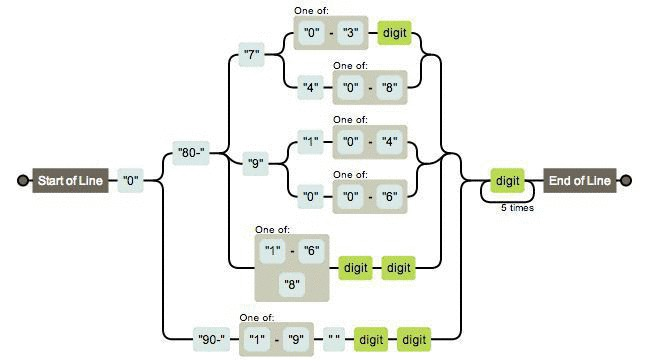
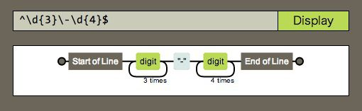
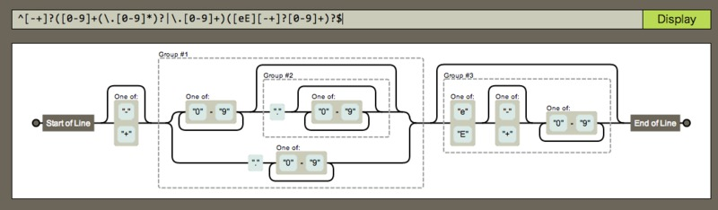

2013-12-12
正規表現をわかりやすく図にしてくれる『Regexper』

さて、これは何の図だと思いますか？
実は 「携帯電話番号」（全選択で分かります。）を判別する正規表現なんです。
今は 「携帯電話番号」も多様化してるので本当に使えるかはさておき、この図の元になった正規表現は実は次のようになります。
/^0(?:80-(?:7(?:[0-3]\d|4[0-8])|9(?:1[0-4]|0[0-6])|[1-68]\d\d)|90-[1-9] \d\d)\d{5}$/はぁ…さっぱりわかりませんね。でも最初の図の方はなんとなく分かるのが不思議です。
Regexper
この正規表現を可視化したツールこそが、Regexperです。
例えば、郵便番号が正しいかどうかを簡単に調べる正規表現の場合、次のようになります。

数値（小数・指数表現あり）が正しいかを調べる正規表現は次のようにになります。（クリックで拡大）

かなり分かりやすくなることが分かってもらえると思います。
まとめ
可視化は非常に重要だと言われていますが、この正規表現を可視化するツールを見ると、いかに可視化が重要かを身をもって感じますね。
個人的には、プログラムのコードとかをこんな感じの手軽なウェブサービスで、初心者でもわかるくらい可視化してくれるサービスがあったらなぁ、なんて思いますね。
補足: 正規表現の落とし穴
余談ですが、Googleで正規表現を検索すると、間違った正規表現が出てくることが多いのにびっくりします。
特に間違いが多いと思うのが、以下の様なケースです。
var s = 'hoge,foo,bar';
var answer = function(){console.log(RegExp.$1 + ' | ' + RegExp.$2)};
// A
s.match(/^(.+),(.+)$/);
answer();
// B
s.match(/^(.+?),(.+)$/);
answer();
// C
s.match(/^(?:.+?),(.+)$/)
answer();さて、これらを各々実行した後の $1 および $2 の値は何でしょうか。
答えは次の通りです。
| $1 | $2 | |
|---|---|---|
| A | hoge,foo | bar |
| B | hoge | foo,bar |
| C | foo,bar | - |
この３つの違い、あなたは正しく分かりましたか？
この違いがわからないと大きなミスをしてしまうことになります。
以下のオライリー本には、かなり詳細に正規表現が解説してあるので、是非一度読んでおいてほしいです。

詳説 正規表現 第3版
posted with amazlet at 14.01.17
Jeffrey E.F. Friedl
オライリージャパン
売り上げランキング: 202,037
オライリージャパン
売り上げランキング: 202,037
 | CSSだけで美しいレスポンシブデザインを実現『Pure』 |
 | 静的サイトジェネレータ『Octopress』の使い方 |
 | 完全に無料なGithubブログを始める方法 |
 | 無料ブログサービスの大きな落とし穴 |
 | PHPの動的キャストで完全にハマった |
comments powered by Disqus